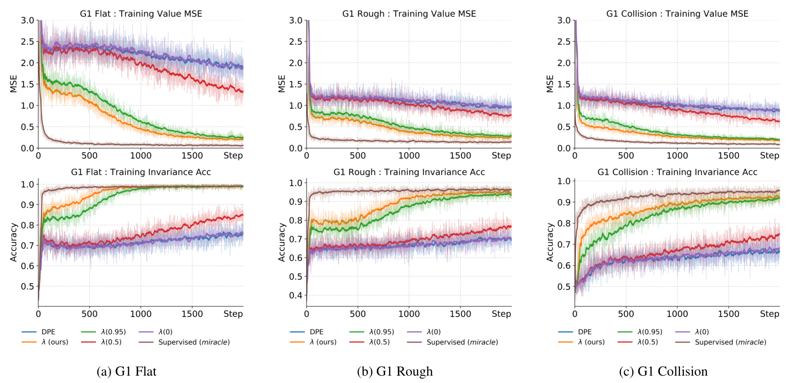

Balance / G1 FlatSafe outcome
Recovering from a push
The robot remains upright after the perturbation.
Accepted to CoRL 2026
Learning to anticipate a humanoid’s worst future safety condition—before a fall or collision occurs.
01 / The idea in motion
A robot can look stable now and still be on a trajectory toward failure. λ-Reachability learns a safety value for a fixed policy that estimates the worst safety signal along its future trajectory.
02 / Hardware experiments
External pushes test balance; incoming balls test collision avoidance. Compare safe and unsafe outcomes on the physical G1. The gallery shows the supplied slow-motion footage; the full video above includes the safety-value traces.
The robot remains upright after the perturbation.
A push leads to a fall onto the protective mat.
The incoming ball passes without hitting the robot.
The ball makes contact, violating the safety constraint.
Outcome labels describe what happens in each recorded trial. A “safe outcome” does not imply that the learned monitor remains negative throughout the trial.
03 / Method
One-step updates propagate future failures backward slowly. λ-Reachability learns from a geometric mixture of multi-step targets, bringing future safety information into each update.
Vπ(xt) = supk ≥ t ℓ(xk)
The worst future safety signal under policy π. Positive values indicate a future violation; the value’s magnitude describes the safety margin.
ℓ(x): what is happening nowInstantaneous balance or collision constraint.
Vπ(x): what lies aheadLearned estimate of the worst future condition.
Draw n from a geometric distribution. λ controls how far the update looks into the future.
Take the maximum safety signal over the sampled trajectory segment.
Include the terminal value with probability δⁿ; otherwise use a lower-bound terminal value.
Explore the horizon
Increase λ to shift probability toward longer trajectory segments.
Beyond 100 stepsCombined probability · P(n ≥ 101) = λ¹⁰⁰
Bars show equal five-step groups; the remaining probability is reported separately above. This is the untruncated distribution. Training uses finite, truncated horizons.
A connection to undiscounted reachability. The ideal operator is a contraction for δ < 1, and its fixed point approaches the undiscounted safety value as λ → 1. These theoretical properties do not by themselves certify a learned neural model on hardware. See §3 and Appendix A
04 / Results
The paper evaluates flat-ground balance, rough-terrain locomotion, and collision avoidance in simulation, with balance and collision experiments transferred to hardware.
Compared with 22.05% for one-step discounted policy evaluation (DPE).
Compared with 13.52% for DPE on physical collision-avoidance trials.
Compared with 0.44 for DPE. Lower error means a more accurate safety margin.
Reported means for λ = 0.99, from Tables 1–2. Temporal recall measures how much of the available pre-violation warning horizon is recovered; it is not a classification accuracy.

| Evaluation | Task | DPE | λ-Reachability |
|---|---|---|---|
| Simulation | G1 Flat | 22.05 ± 12.3099.98 ± 0.21 | |
| Simulation | G1 Rough | 21.94 ± 16.6697.92 ± 9.24 | |
| Simulation | G1 Collision | 22.61 ± 14.5099.40 ± 4.79 | |
| Hardware | G1 Flat | 62.07 ± 19.4280.91 ± 4.96 | |
| Hardware | G1 Collision | 13.52 ± 6.9773.59 ± 9.20 |
Finite rollouts require truncated horizon sampling, which can bias the learning target. Longer horizons can also be less robust to noisy real observations: on hardware balance trials, shorter λ settings perform better on some metrics. The work learns safety values for a fixed policy; it does not synthesize a new safety controller.
Read the limitations and discussion in §5–6@misc{chen2026lambdareachability,
title={$\lambda$-Reachability: Geometric-Horizon Safety Bellman Equations for Humanoid Safety},
author={Rui Chen and Shangtao Li and Yifan Sun and Changliu Liu},
year={2026},
eprint={2606.16022},
archivePrefix={arXiv},
primaryClass={cs.RO},
url={https://arxiv.org/abs/2606.16022}
}arXiv citation; accepted to CoRL 2026.